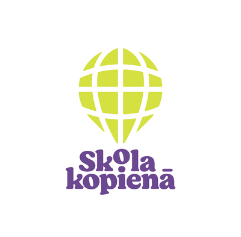

Projekta finansējums
Iniciatīvu projektu finansē projekts „Skola – kopienā”, kas tiek īstenots Eiropas Sociālā fonda Plus projekta Nr. 4.2.3.1/1/24/I/001 ietvaros.

Skola – kopienā
2026. gada septembris – 2027. gada 31. maijs
Kopīgi veidojam drošu, saliedētu un iekļaujošu skolas vidi.

No 2026. gada septembra līdz 2027. gada maijam Aizupes pamatskolā sadarbībā ar nodibinājumu „Junior Achievement Latvijas Ekonomikas skolotāju klubs” un nodibinājumu „JĀdara” tiek īstenots projekts „JĀdara kopā”. Projekts norisinās Eiropas Sociālā fonda Plus projekta „Skola – kopienā” (Nr. 4.2.3.1/1/24/I/001) ietvaros.
Prasmju treniņos un darbnīcās attīstīsim gan ikdienas dzīvē noderīgas prasmes – komunikāciju, sadarbību, empātiju, atbildību, gan veidosim savas individuālās un skolas izaugsmes mērķu kartes. Projekta dalībnieki varēs iepazīt dažādas mācīšanās metodes, gūt praktisku pieredzi un vērtīgas iemaņas savā izaugsmē.
Projektā piedalās Aizupes pamatskolas 6.–8. klašu skolēni, skolotāji un skolēnu vecāki, kopīgi veidojot drošu, saliedētu un iekļaujošu skolas vidi.
Katru mēnesi jauna aktivitāte, tādēļ seko līdzi informācijai!
Vecāku un skolotāju ieguvums būs praktiski rīki un metodes personīgās un profesionālās dzīves izaugsmei.
Visu projekta aktivitāšu īstenošana balstās uz koučinga pieejas un neformālās izglītības metodēm. Tās vadīs Vineta Saulīte – profesionāls starptautiski sertificēts koučs, bērnu apzinātības skolotāja – un Dainis Zaltans – profesionāls koučs un personālvadības eksperts.
Projekts „JĀdara kopā” ir sācies ar aizraujošu un saliedējošu tikšanos mūsu 6., 7. un 8. klašu skolēniem.
Lasīt par pirmo nodarbībuIniciatīvu projektu finansē projekts „Skola – kopienā”, kas tiek īstenots Eiropas Sociālā fonda Plus projekta Nr. 4.2.3.1/1/24/I/001 ietvaros.